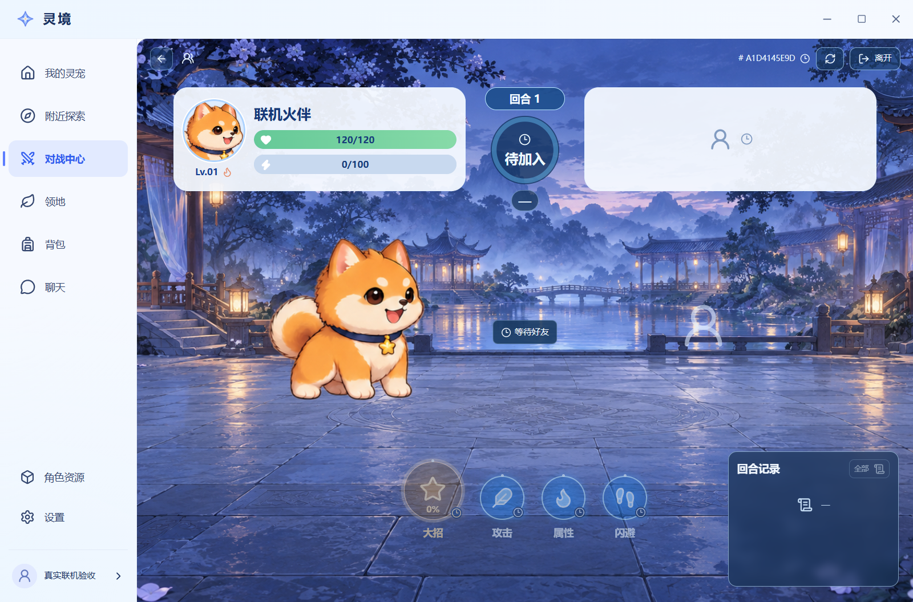
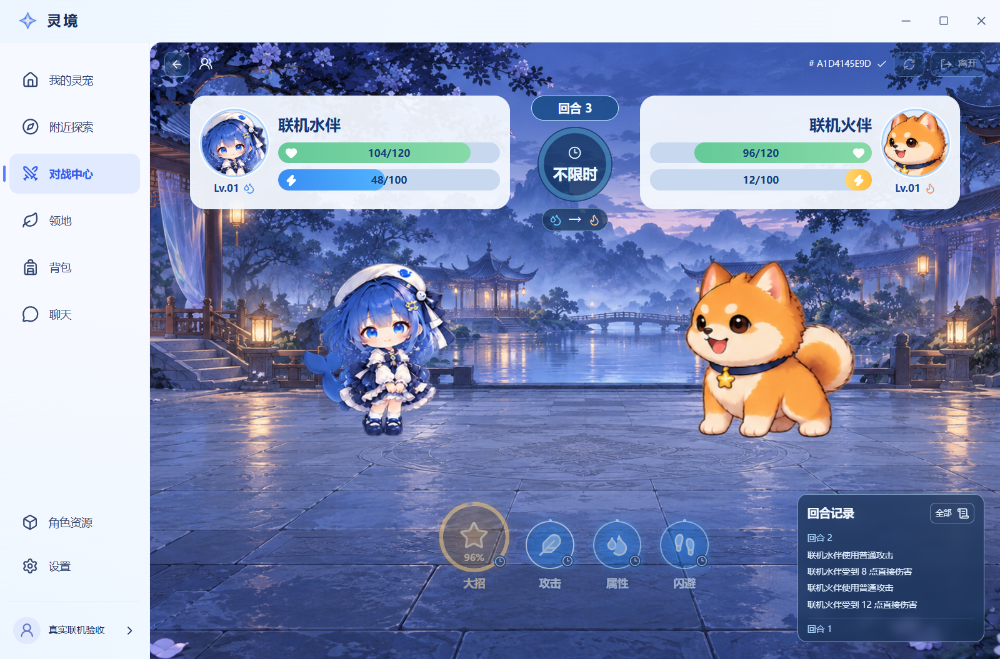
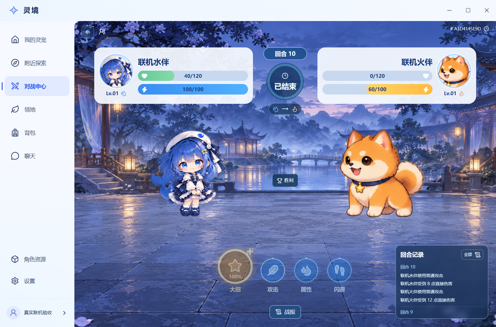
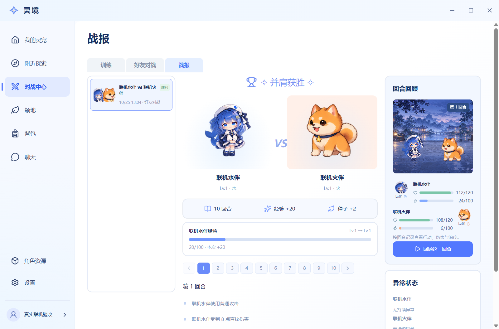
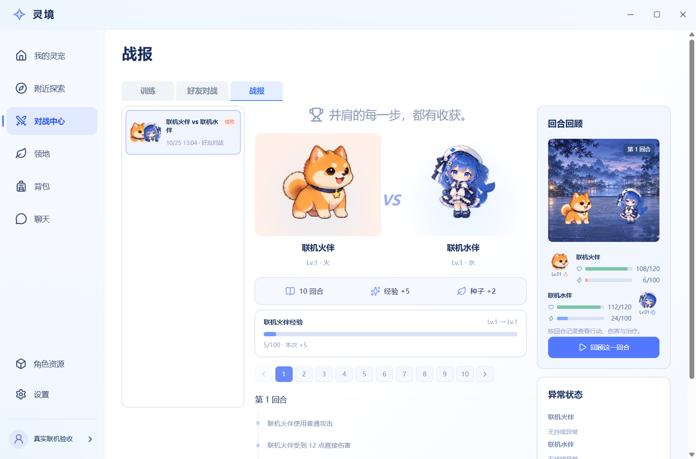
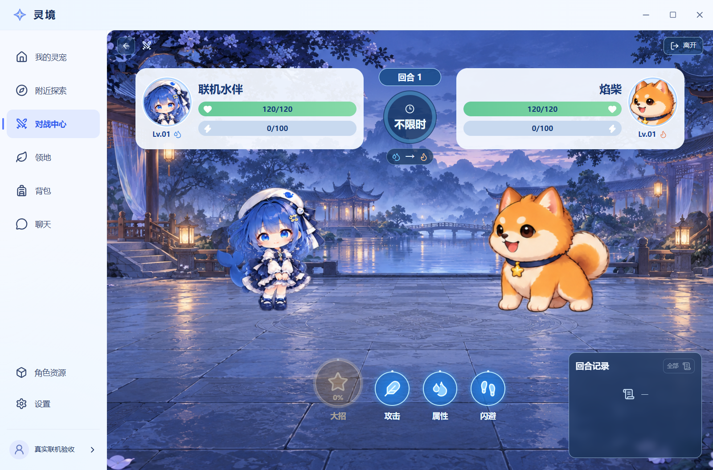
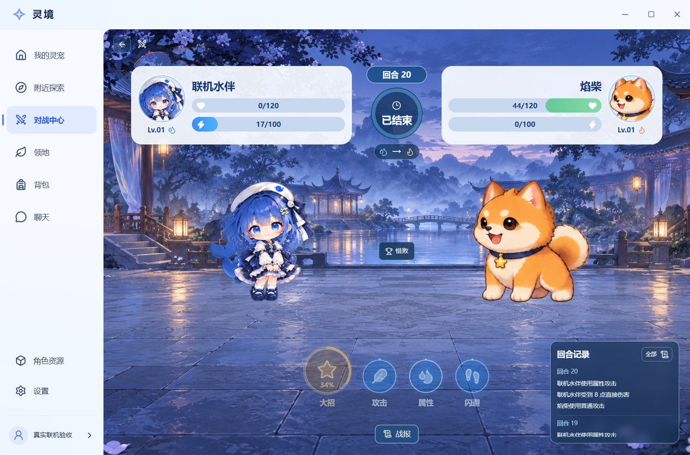

灵境 04｜真实云端原生验收
同机独立 Electron 44.9.3 客户端，真实 HTTPS、JWT 和私有 Realtime。好友 10 回合、云训练 20 回合、实际设备撤销；源检查点 65e4210。
证据分阶段相连，前两轮的后续界面／脚本失败状态原样保留。未宣称一次不中断全程通过，也未验证两台实体设备。
接受真实云端邀请后等待对手加入。
第三回合保留原动作后关闭原生进程，再以原设备会话和原 actionId 恢复。
10 回合自然终局。
A 的战报：10 回合、经验 +20、种子 +2，实际回放和生命怒气快照。
B 的原生战报。
同账号另一设备恢复活动云训练。
第二设备通过实际界面完成 20 回合训练；自然失败仍按规则获得 +5 经验和 2 粒种子。
65e4210 清退旧连接后，新隔离原生客户端重新打开原终局，私有频道加入和重启持久化均通过。